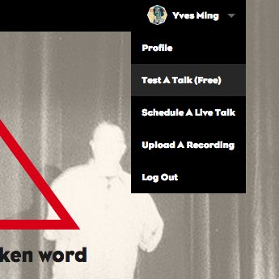
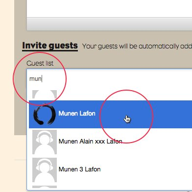
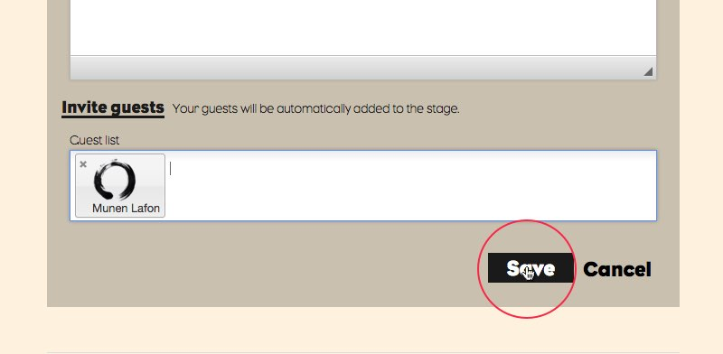

Technical Requirements
To stream a Talk, you need 5 things:

1. Computer
Either a Laptop or a Desktop computer, running a current version of Chrome or Firefox, with the latest version of Flash Player installed.

2. Internet
A stable connection is needed throughout the Talk. Preferably a LAN connection with at least 50Kb (kilobits per second) upload.

3. Audio Source
En external microphone connected to a mixer and an audio interface is highly recommended for optimal sound quality. For more information about the audio setup, refer to Step 1 (below).
4. Headphones
Either a Laptop or a Desktop computer, running a current version of Chrome or Firefox, with the latest version of Flash Player installed.

5. Operator
Either a Laptop or a Desktop computer, running a current version of Chrome or Firefox, with the latest version of Flash Player installed.
Step 1: Configure Audio
Optimal Audio Setup:
Alternative Audio Setups:
Under Construction
Step 2: Conduct A Test Talk
Note: It's a very good idea to conduct a Test Talk before going LIVE with a Talk or lineup of Talks. With a Test Talk you can ensure that your signal flow is functioning correctly, and that the sound quality is up to desirable standards.
Follow These Steps To Conduct a Test Talk:
(Make sure you've configured your audio gear according to Step 1.)
1. Test A Talk
From your profile drop-down menu, select "Test A Talk (Free)"
2. Invite A Friend
All the fields will be automatically filled out with randomly generated text. If you'd like someone to listen to your Test Talk while it streams live (recommended), they must be invited to the Talk. Begin typing their name or username in the "Invite guests" field and then select their name from the drop-down menu.
3. Save
Click "Save."
4. You will be redirected to the Talk page and the Audio Settings panel will automatically launch. Click "Allow" to give the browser access to your audio device.
5. To ensure the browser is receiving the audio signal from your intended audio interface, you must set it as the input source. Click the "Select Input Source" button.
6. In the Adobe Flash Player Settings dialog, click the drop-down menu.
7. Select your audio interface from the list.
8. Close the Audio Settings dialog.
9. Click "Start" and instruct the speaker to talk normally into the microphone as though it were a live talk.
10. To end the Test Talk, click "End Talk."
11. The Test Talk will take a few moments to process.
12. Reload the page by clicking the blue panel.
13. Play your Test Talk to check the audio quality.
The Test Talk will automatically be deleted after 24 hours.